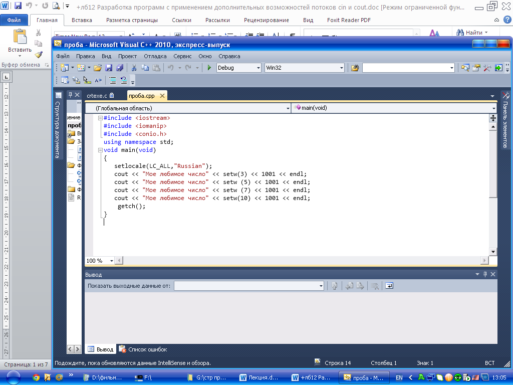
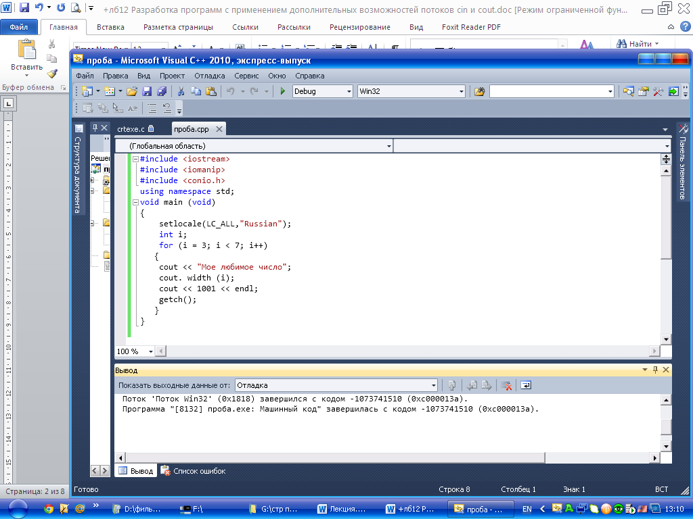
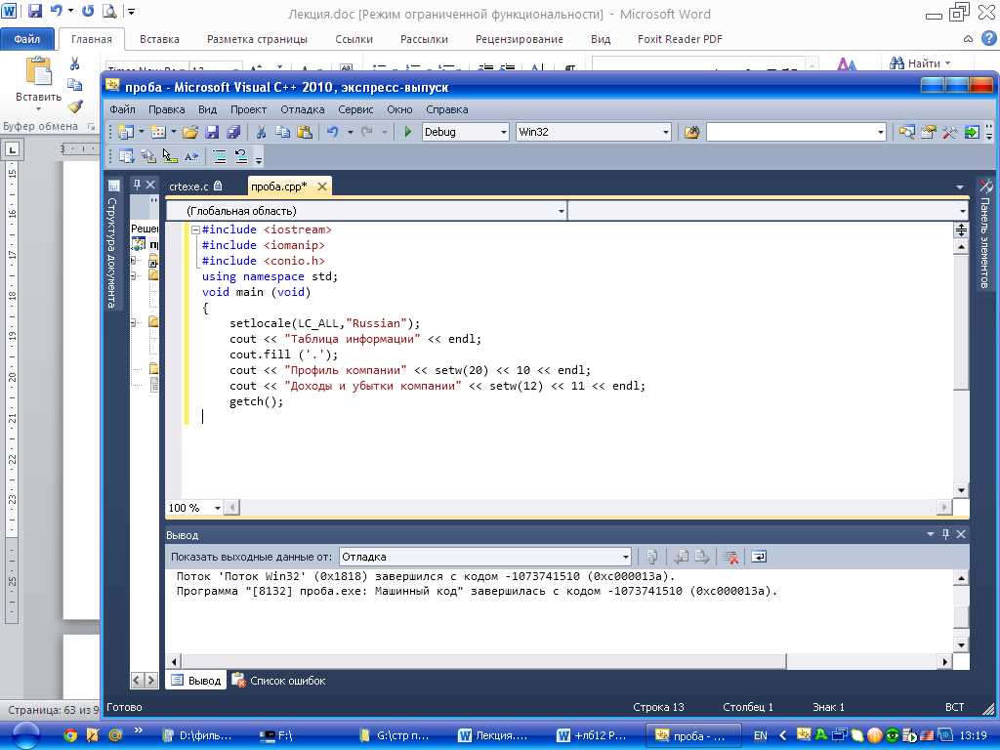
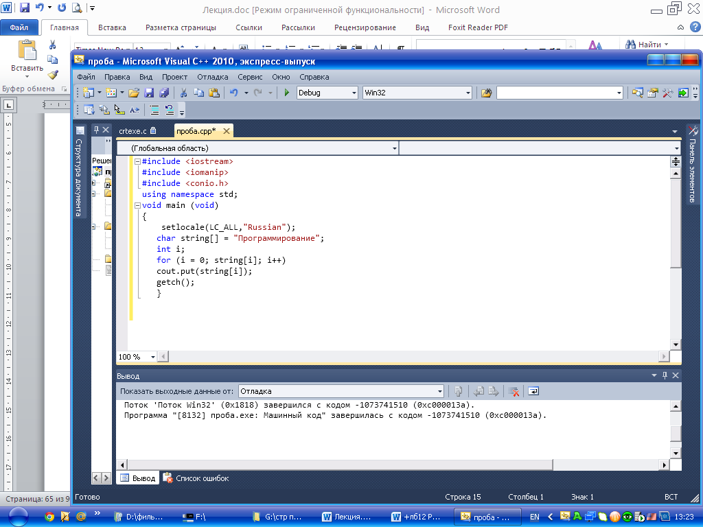

Лабораторная работа №10
Тема: Разработка программ с применением дополнительных возможностей потоков cin и cout.
Цель работы: Разработка программ с применением дополнительных возможностей потоков cin и cout.
Материальное обеспечение: Компьютерное оборудование и программное обеспечение.
Основные понятия и определения
Заголовочный файл iostream.h содержит определения, позволяющие программам использовать cout для выполнения вывода и cin для выполнения ввода. Более точно, этот файл определяет классы istream и ostream (входной поток и выходной поток), a cin и соut являются переменными (объектами) этих классов.
Для вывода сообщений, символьных констант, чисел и значений, переменных необходимо использовать выходной поток cout. С помощью cout можно форматировать выводимое сообщение, используя управления шириной вывода сообщений на экран, управляя количеством цифр для вещественных чисел. Таким образом, сout представляет собой класс, который содержит несколько разных методов.
Методический пример 1. Написать программу, используя манипулятор setw, позволяет программам указать минимальное количество символов, которое может занять выходное значение.

Результат программы:
Мое любимое число 1001
Мое любимое число 1001
Мое любимое число 1001
Мое любимое число 1001
Подобным образом метод cout.width позволяет указать минимальное количество символов, которое будет использовать cout для вывода следующего значения.
Методический пример 2. Написать программу, которая используя метод cout.width управляет шириной вывода сообщений на экран.

Результат программы:
Мое любимое число1001
Мое любимое число 1001
Мое любимое число 1001
Мое любимое число 1001
При использовании манипулятора setw или функции cout.width для управления шириной вывода, cout будет помещать пробелы до значений, как это и требуется. В зависимости от назначения программы, возможно, потребуется использовать символ, отличный от пробела. Предположим, например, что программа создает такую таблицу:
Таблица информации
Профиль компании................................................ 10
Доходы и убытки компании...................................11
В данном случае вывод предваряет номера страниц точками. Функция cout.fill позволяет указать символ, который cout будет использовать для заполнения пустого пространства.
Методический пример 3. Данная программа создает таблицу, подобную приведенной выше:

Результат программы:
Таблица информации
Профиль компании……………………………10
Доходы и убытки компании…………………..11
При использовании cout для вывода значения с плавающей точкой, то обычно невозможно сделать каких-либо предположений о том, сколько цифр будет выводить cout no умолчанию. Однако, используя, манипулятор setprecision, можно можете указать количество требуемых цифр.
В зависимости от назначения программы, возможно в некоторых ситуациях, потребуется выводить символы на дисплей или читать с клавиатуры по одному символу за один раз. Для вывода одного символа за один раз программы могут использовать функцию cout.put.
Методический пример 4.Данная программа использует эту функцию для вывода на экран сообщения Программирование по одному символу за раз:

Результат работы: Программирование
Точно так же, как cout предоставляет функцию cout.put для вывода символа, cin предоставляет функцию cin.get, которая позволяет читать один символ данных. Чтобы воспользоваться функцией cin.get, просто необходимо присвоить переменной возвращаемый этой функцией символ, как показано ниже:
letter = cin.get();
При использовании cin для выполнения ввода с клавиатуры, cin использует пустые символы, такие как пробел, табуляция для определения, где заканчивается одно значение и начинается другое. Во многих случаях, чтобы программы считывали целую строку данных в символьную строку необходимо использовать функцию cin.getline. Для использования cin.getline необходимо указать символьную строку, в которую будут помещаться символы, а также размер строки, как показано ниже:
cin.getline(string, 64);
Когда cin.get читает символы с клавиатуры, она не будет читать символов больше, чем может вместить строка. Удобным способом определить размер массива является использование оператора C++ sizeof, как показано ниже:
сin.getline(string, sizeof(string));
Если позже изменить размер массива, то не нужно будет искать и изменять каждый оператор с cin.get, встречающийся в программе. Вместо этого оператор sizeof' будет использовать корректный размер массива.
Методический пример 5. Данная программа использует функцию cin.getline для чтения с клавиатуры строки текста:
Результат программы:
Введите строку текста и нажмите Enter
С++
Вы ввели: С++
Варианты заданий:
1)- Написать программу, которая выводит сообщение на экран 5 раз с применением цикла for (Смотрите методический пример № 2).
- Написать программу, которая считывает строку текста с клавиатуры до появления определенного символа. (Смотрите методический пример № 5).
2)- Написать программу, которая выводит сообщение на экран 6 раз с применением цикла for. (Смотрите методический пример № 2).
- Написать программу, которая считывает строку текста с клавиатуры до появления определенного символа. (Смотрите методический пример № 5).
3)- Написать программу, которая выводит сообщение на экран 7 раз с применением цикла for. (Смотрите методический пример № 2).
- Написать программу, которая считывает строку текста с клавиатуры до появления определенного символа. (Смотрите методический пример № 5).
4)- Написать программу, которая выводит сообщение на экран 8 раз с применением цикла for. (Смотрите методический пример № 2).
- Написать программу, которая считывает строку текста с клавиатуры до появления определенного символа. (Смотрите методический пример № 5).
5)- Написать программу, которая выводит сообщение на экран 9 раз с применением цикла for. (Смотрите методический пример № 2).
- Написать программу, которая считывает строку текста с клавиатуры до появления определенного символа. (Смотрите методический пример № 5).
6)- Написать программу, которая выводит сообщение на экран 10 раз с применением цикла for. (Смотрите методический пример № 2).
- Написать программу, которая считывает строку текста с клавиатуры до появления определенного символа. (Смотрите методический пример № 5).
7)- Написать программу, которая выводит сообщение на экран 11 раз с применением цикла for. (Смотрите методический пример № 2).
- Написать программу, которая считывает строку текста с клавиатуры до появления определенного символа. (Смотрите методический пример № 5).
8)- Написать программу, которая выводит сообщение на экран 12 раз с применением цикла for. (Смотрите методический пример № 2).
- Написать программу, которая считывает строку текста с клавиатуры до появления определенного символа. (Смотрите методический пример № 5).
СРС
Вывести таблицу умножения введенного числа.
Порядок выполения работы:
1.Изучить теоретические сведения по данной лабораторной работе.
2.Составить программу для заданного варианта.
3.Записать программу на языке Visual C++.
4.Отладить программу.
5.Продемонстрировать работу программы на ПК для заданного варианта.
Содержание отчета:
1.Тема и цель работы.
2.Вариант задания.
3.Листинг и результат программы.
4.Контрольные вопросы.
Контрольные вопросы:
1.Какая функция позволяет программам управлять шириной вывода сообщения на экране?
2.Какой манипулятор позволяет управлять количеством выводимых цифр?
3.Для чего необходима функция cout.put?
4.Какая функция позволяет программам читать строку текста с клавиатуры?
Литература:
1.Хортон А. Visual 2010: полный курс.:Пер. с анг.-М.:ООО «И.Д.Вильямс», 2011г , 1216 с.: ил.
2.Пахомов Б.И. С/C++ и MS Visual C++ 2010 для начинающих. – СПб.:БХВ-Петербург, 2011.-736 с.:ил.
3.Зиборов В. В. MS Visual C++ 2010 в среде.NET. Библиотека программиста. — СПб.: Питер,
2012. — 320 с.: ил.
4.Прохоренок Н.А. Программирование на С++ в Visual Studio 2010 Express, - СПб.: Питер, 2011г , 71 с.: ил.
5.Степаненко О.Е. VisualC++.NET.Классикапрограммирования.:-М:Научнаякнига,К.;Бу-кипист,2010.—768с.